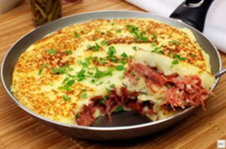

Escondidinho de Carne Seca

Ingredientes
Recheio
- 500 g de carne seca dessalgada e desfiada
- 2 colheres (sopa) de azeite
- 1 cebola picada
- 2 dentes de alho picados
- 2 tomates sem pele picados
- Cheiro-verde a gosto
Purê
- 1 kg de mandioca cozida
- 2 colheres (sopa) de manteiga
- 1 xícara (chá) de leite
- Sal a gosto
Cobertura
- 200 g de queijo muçarela ralado
- 2 colheres (sopa) de parmesão ralado
Materiais
Panela de pressão
Frigideira
Refratário ou frigideira que vá ao forno
Modo de preparo
- Em uma panela, aqueça o azeite e refogue a cebola e o alho. Junte a carne seca e o tomate e deixe cozinhar por 10 minutos.
- Desligue o fogo e misture o cheiro-verde. Reserve.
- Amasse a mandioca ainda quente e leve ao fogo com a manteiga e o leite, mexendo até virar um purê cremoso. Acerte o sal.
- Em um refratário, coloque metade do purê, todo o recheio e cubra com o restante do purê.
- Espalhe a muçarela e o parmesão por cima e leve ao forno a 200 °C por cerca de 25 minutos, até dourar.